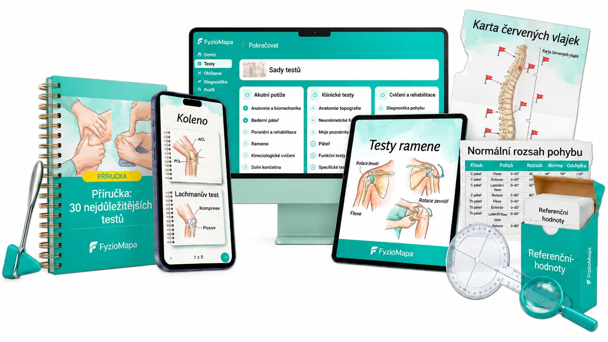
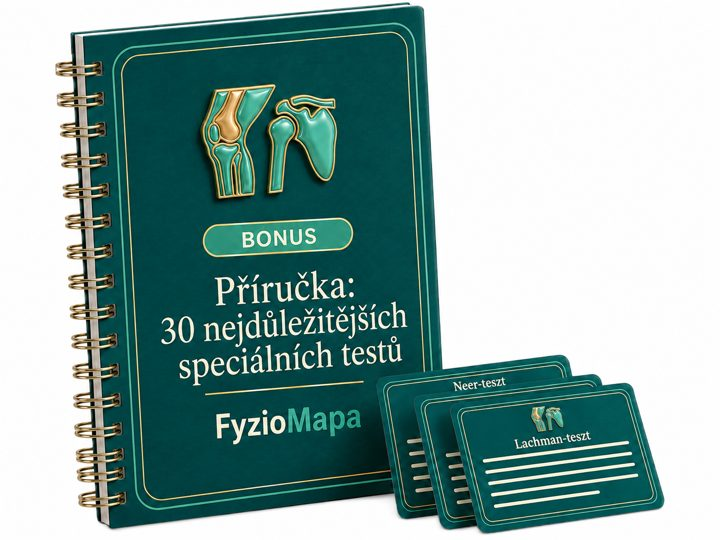
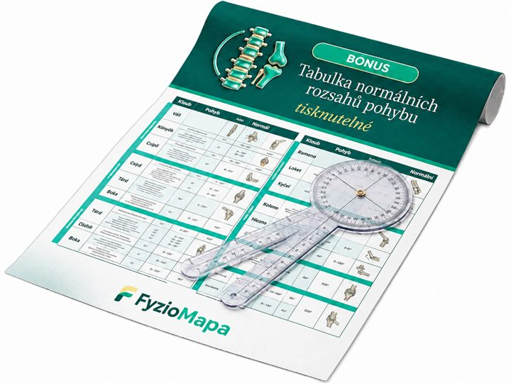
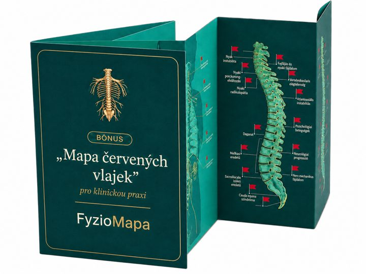

FyzioMapa · 54 témat a 160+ stran vizuálních map od vyšetření po rehabilitaci · 3 bonusy zdarma
Fyzioterapie od vyšetření po rehabilitaci s vizuálními mapami a opakováním, které si skutečně zapamatujete. Aplikaci si můžete kdykoliv otevřít v telefonu i počítači z této stránky.

54 témat s vizuálními mapami, přehled každého testu a patologie, na každé straně 2 kontrolní otázky, paměťový režim (Leitnerův systém), 3 úrovně (Základní, Pokročilý, Klinický), série, body, úroveň a ocenění.
Otevřít aplikaci › 📄PDF verze (ke stažení a tisku)Všech 54 témat, 201 stran: vizuální mapy, přehledy, klinická shrnutí, kontrolní otázky a na konci řešení s vysvětlením.
Otevřít PDF · 22.8 MB3 dárkové bonusy

30 speciálních testů nejčastějších u zkoušek a v klinické praxi: provedení, význam pozitivního výsledku a testovaná struktura. Kapesní formát (A6).
Otevřít / uložit PDF · 33 str. · 0.4 MB
Referenční hodnoty pro všechny klouby od ramene po kotník pro zapsání naměřených hodnot vpravo a vlevo (A4, 2 strany).
Otevřít / uložit PDF · 2 str. · 0.2 MB
Příznaky, podle nichž bolest není mechanického původu a může vyžadovat lékařské vyšetření, na jedné straně pro každou oblast těla (na šířku A4).
Otevřít / uložit PDF · 1 str. · 0.1 MBJak začít
- Přidejte aplikaci na domovskou obrazovkuOtevřete aplikaci a v menu sdílení prohlížeče vyberte možnost „Přidat na domovskou obrazovku“. Příště ji otevřete jedním klepnutím.
- Začněte 1. tématem a odpovězte na 2 otázkyKaždé téma má 3 strany (vizuální mapa, přehled, klinické shrnutí) a na konci každého z nich jsou 2 otázky.
- Paměťový režim jednou denněŠpatné odpovědi se vrátí následující den a ty zvládnuté v čím dál delších intervalech, zcela automaticky.
- Vytiskněte si bonusyKapesní průvodce do kapsy pláště, tabulku rozsahu pohybu a červené vlajky k vyšetřovacímu lůžku.
Dnes si v aplikaci otevřete 1. téma („Roviny a osy“) a odpovězte na první 2 otázky. Jedno téma zvládnete za 10 minut.
Studijní a referenční materiál pro studenty fyzioterapie a odborníky. Nenahrazuje vyšetření kvalifikovaným zdravotníkem. Váš pokrok se ukládá v prohlížeči daného zařízení (pro každé zařízení zvlášť).